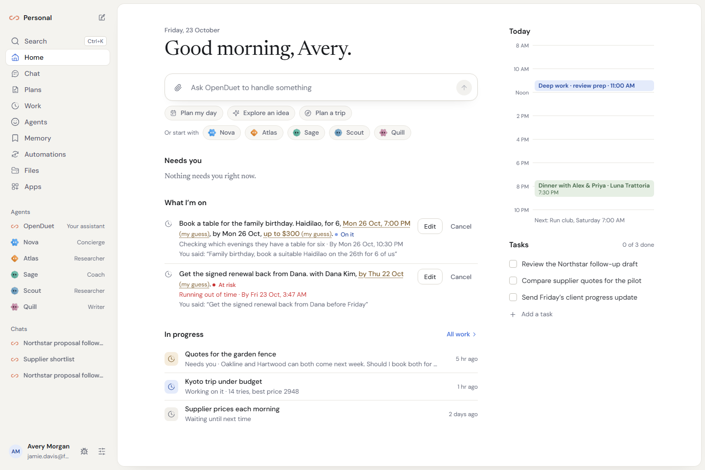
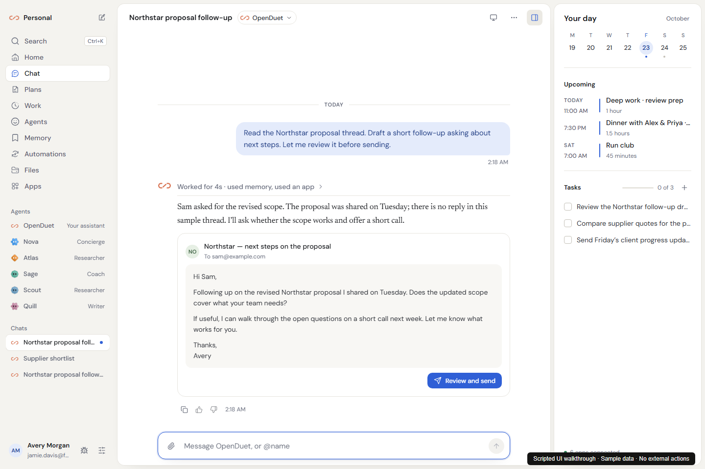
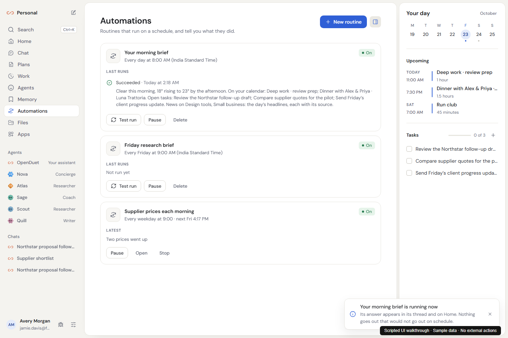
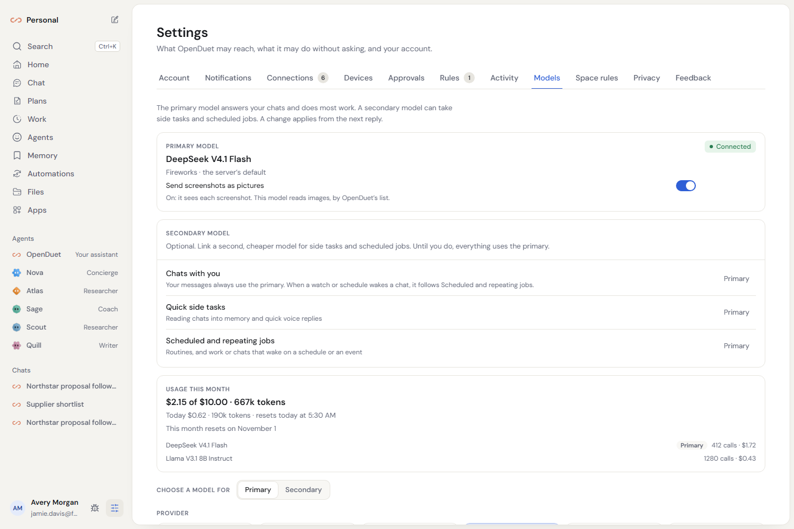

Delegate the work. Keep the control.
Chat, priorities and background work in your own installation.

Read the thread. Review what leaves.
A client follow-up with a complete draft you can inspect before sending.

Make useful work a routine.
Daily briefs and weekly research, with schedules and run history.

Your server. Your model. Your workflow.
Self-host OpenDuet. Connect a real model. Start with one useful task.
